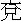

煙花風景眼前休，此地仍傳燕子樓。
鴛夢肯忘三月蕙？翠顰能省一生愁。
柘因零落難重舞，蓮為單開不並頭。
嬌豔豈無黃壤瘞？至今人過說風流。
話說大唐自政治大聖大孝皇帝諡法太宗開基之後，至十二帝憲宗登位，凡一百九十三年，天下無事日久，兵甲生塵，刑具不用。時有禮部尚書張建封做官年久，恐妨賢路，遂奏乞骸骨歸田養老。憲宗曰：「卿年齒未衰，豈宜退位？果欲避冗辭繁，敕鎮青徐數載。」建封奏曰：「臣雖菲才，既蒙聖恩，自當竭力。」遂敕建封節制武寧軍事，建封大喜。平昔愛才好客，既鎮武寧，揀選才能之士，禮置門下。後房歌姬舞妓，非知書識禮者不用。武寧有妓關盼盼，乃徐方之絕色也。但見：
歌喉清亮，舞態婆姿，調絃成合格新聲，品竹作出塵雅韻。琴彈古調，棋覆新圖。賦詩琢句，追風雅見於篇中；搦管丹青，奪造化生於筆下。
建封雖聞其才色無雙，緣到任之初，未暇召於樽俎之間。忽一日，中書舍人白樂天名居易，自長安來，宣諭

鄆，路過徐府，乃建封之故人也。喜樂天遠來，遂置酒邀飲於公館，只見：幕捲流蘇，簾垂朱箔，瑞腦煙噴寶鴨，香醪光溢瓊壺。果劈天漿，食烹異味。綺羅珠翠，列兩行粉面梅妝；脆管繁音，奏一派新聲雅韻。遍地舞裀鋪蜀錦，當筵歌拍按紅牙。
當時酒至數巡，食供兩套，歌喉少歇，舞袖亦停。忽有一妓，抱胡琴立於筵前，轉袖調絃，獨奏一曲，纖手斜拈，輕敲慢按。滿座清香消酒力，一庭雅韻爽煩襟。須臾彈徹韶音，抱胡琴侍立。建封與樂天俱喜調韻清雅，視其精神舉止，但見：花生丹臉，水剪雙眸，意態天然，迥出倫輩。回視其餘諸妓，粉黛如土。遂呼而問曰：「孰氏？」其妓斜抱胡琴，緩移蓮步，向前對曰：「賤妾關盼盼也。」建封喜不自勝，笑謂樂天曰：「彭門樂事，不出於此。」樂天曰：「似此佳人，名達帝都，信非虛也！」建封曰：「誠如舍人之言，何惜一詩贈之？」樂天曰：「但恐句拙，反污麗人之美。」盼盼據卸胡琴，掩袂而言：「妾姿質醜陋，敢煩珠玉？若果不以猥賤見棄，是微軀隨雅文不朽，豈勝身後之榮哉。」樂天喜其黠慧，遂口吟一絕：
鳳撥金鈿砌，檀槽後帶垂。
醉嬌無氣力，風裊牡丹枝。
盼盼拜謝樂天曰：「賤妾之名，喜傳於後世，皆舍人所賜也。」於是賓主歡洽，盡醉而散。
翌日，樂天車馬東去。自此，建封專寵盼盼，遂於府第之側，擇佳地創建一樓，名曰「燕子樓」，使盼盼居之，建封治政之暇，輕車潛往，與盼盼宴飲，交飛玉斝，共理笙簧，璨錦相偎，鸞衾共展。綺窗唱和，指花月為題；繡閣論情，對松筠為誓。歌笑管絃，情愛方濃。不幸彩雲易散，皓月難圓。建封染病，盼盼請醫調治，服藥無效，問卜無靈，轉加沉重而死。子孫護持靈柩，歸葬北邙，獨棄盼盼於燕子樓中。香消衣被，塵滿琴箏，沉沉朱戶長扃，悄悄翠簾不捲。
盼盼焚香指天誓曰：「妾婦人，無他計報尚書恩德，請落髮為尼，誦佛經資公冥福，盡此一世，誓不再嫁。」遂閉戶獨居，凡十換星霜，人無見面者。
鄉黨中有好事君子，慕其才貌，憐其孤苦，暗暗通書，以窺其意。盼盼為詩以代柬答，前後積三百餘首，編綴成集，名曰《燕子樓集》，鏤板流傳於世。
忽一日，金風破暑，玉露生涼，雁字橫空，蛩聲喧草。寂寥院宇無人，靜鎖一天秋色。盼盼倚欄長歎，獨言曰：「我作之詩，皆訴愁苦，未知他人能曉我意否？」沉吟良久，忽想：「翰林白公必能察我，不若賦詩寄呈樂天，訴我衷腸，必表我不負張公之德。」遂作詩三絕，緘封付老蒼頭，馳赴西洛，詣白公投下。白樂天得詩，啟緘展視，其一曰：
北邙松柏鎖愁煙，燕子樓人思悄然；
因埋冠劍歌塵散，紅袖香消二十年。
其二曰：
適看鴻雁岳陽回，又睹玄禽送社來；
瑤瑟玉簾無意緒，任從蛛網結成灰。
其三曰：
樓上殘燈伴曉霜，獨眠人起合歡床，
相思一夜知多少？地角天涯不是長！
樂天看畢，歎賞良久。不意一妓女能守節操如此，豈可棄而不答？亦和三章以嘉其意，遣老蒼頭馳歸。盼盼接得，拆開視之，其一曰：
鈿暈羅衫色似煙，一回看著一潸然，
自從不舞《霓裳曲》，疊在空箱得幾年？
其二曰：
今朝有客洛陽回，曾到尚書塚上來，
見說白楊堪作柱，爭教紅粉不成灰。
其三曰：
滿簾明月滿庭霜，被冷香銷拂臥床，
燕子樓前清夜雨，秋來只為一人長。
盼盼吟玩久之，雖獲驪珠和璧，未足比此詩之美。笑謂侍女曰：「自此之後，方表我一點真心。」正欲藏之篋中，見紙尾淡墨題小字數行，遂復展看，又有詩一首：
黃金不惜買蛾眉，揀得如花只一枝。
歌舞教成心力盡，一朝身死不相隨。
盼盼一見此詩，愁鎖雙眉，淚盈滿臉，悲泣哽咽，告侍女曰：「向日尚書身死，我恨不能自縊相隨，恐人言張公有隨死之妾，使尚書有好色之名，是玷公之清德也。我今苟活以度朝昏，樂天不曉，故作詩相諷。我今不死，謗語未息。」遂和韻一章云：
獨宿空樓斂恨眉，身如春後敗殘枝；
舍人不解人深意，諷道泉臺不去隨。
書罷擲筆於地，掩面長吁。久之，拭淚告侍女曰：「我無計報公厚德，惟墜樓一死，以表我心。」道罷，纖手緊褰繡袂，玉肌斜靠雕欄，有心報德酬恩，無意偷生苟活，下視高樓，踴躍奮身一跳。侍女急拽衣告曰：「何事自求橫夭？」盼盼曰：「一片誠心，人不能表，不死何為？」侍女勸曰：「今捐軀報德，此心雖佳，但粉骨碎身，於公何益？且遺老母，使何人侍養？」盼盼沉吟久之曰：「死既不能，惟誦佛經，祝公冥福。」
自此之後，盼盼惟食素飯一盂，閉閣焚香，坐誦佛經。雖比屋未嘗見面。久之鬢雲懶掠，眉黛慵描，倦理寶瑟瑤琴，厭對鴛衾鳳枕。不施硃粉，似春歸欲謝庾嶺梅花；瘦損腰肢，如秋後消疏隋堤楊柳。每遇花辰月夕，感舊悲哀，寢食失常。不幸寢疾，伏枕月餘，遽爾不起。老母遂卜吉葬於燕子樓後。
盼盼既死，不二十年問，而建封子孫，亦散蕩消索。盼盼所居燕子樓遂為官司所占。其地近郡圃，因其形勢改作花園，為郡將遊賞之地。
星霜屢改，歲月頻遷，唐運告終，五代更伯。當周顯德之末，天水真人承運而興，整頓朝綱，經營禮法。顧視而妖氛寢滅，指揮而宇宙廓清。至皇宋二葉之時，四海無犬吠之警。
當時有中書舍人錢易，字希白，乃吳越王錢鏐之後裔也。文行詩詞，獨步朝野，久住紫薇，意欲一歷外任。遂因奏事之暇，上章奏曰：「臣久據詞掖，無毫髮之功，乞一小郡，庶竭駑駘！」上曰：「青魯地腴人善，卿可出鎮彭門。」遂除希白節制武寧軍。希白得旨謝恩。下車之日，宣揚皇化，整肅條章。訪民瘼於井邑，察冤枉於囹圄。屈己待人，親耕勸農，寬仁惠愛，勸化凶頑，悉皆奉業守約，廉謹公平。
聽政月餘，節屆清明。既在暇日，了無一事，因獨步東階。天氣乍暄，無可消遣，遂呼蒼頭前導，閒遊圃中。但見：
晴光靄靄，淑景融融，小桃綻妝臉紅深，嫩柳裊宮腰細軟。幽亭雅榭，深藏花圃陰中；畫舫蘭橈，穩纜回塘岸下。鶯貪春光時時語，蝶弄睛光擾擾飛。
希白信步，深入芬芳，縱意遊賞。到紅紫叢中，忽有危樓飛檻，映遠橫空，基址孤高，規模壯麗。希白舉目仰觀，見畫棟下有牌額，上書「燕子樓」三字。希白曰：「此張建封寵盼盼之處，歲月累更，誰謂遺蹤尚在！」遂攝衣登梯，逕上樓中，但見：
畫棟棲雲，雕樑聳漢，視四野如窺目下，指萬里如睹掌中。遮風翠幙高張，蔽日疏簾低下。移蹤但覺煙霄近，舉目方知宇宙寬。
希白倚欄長歎言曰：「昔日張公清歌對酒，妙舞邀賓，百歲既終，雲消雨散，此事自古皆然，不足感歎。但惜盼盼本一娼妓，而能甘心就死，報建封厚遇之恩，雖烈丈夫何以加此！何事樂天詩中，猶譏其不隨建封而死！實憐守節十餘年，自潔之心，泯沒不傳。我既知本末，若緘口不為褒揚，盼盼必抱怨於地下。」即呼蒼頭磨墨，希白染毫，作古調長篇，書於素屏之上。其詞曰：
人生百歲能幾日？茬苒光陰如過隙！
樽中有酒不成歡，身後虛名又何益？
清河太守真奇偉，曾向春風種桃李；
欲將心事占韶華，無奈紅顏隨逝水。
佳人重義不顧生，感激深恩甘一死。
新詩寄語三百篇，貫串風騷洗沐耳。
清樓十二橫霄漢，低下珠簾鎖雙燕。
嬌魂媚魄不可尋，盡把闌干空倚遍！
希白題罷，朗吟數過，忽有清風襲人，異香拂面。希內大驚，此非花氣，自何而來？方疑訝間，見素屏後有步履之聲。希白即轉屏後窺之。見一女子，雲濃紺髮，月淡修眉，體欺瑞雪之容光，臉奪奇花之豔麗，金蓮步穩，束素腰輕。一見希白，嬌羞臉黛，急挽金鋪，平掩其身，雖江梅之映雪，不足比其風韻。
希白驚訝，問其姓氏。此女捨金鋪，掩袂向前，敘禮而言曰：「妾乃守園老吏之女也。偶因令節，閒上層樓，忽值相公到來，妾荒急匿身於此，以蔽醜惡。忽聞誦弔盼盼古調新詞，使妾聞之，如獲珠玉，送潛出聽於索屏之後，因而得面臺顏。妾之行藏，盡於此矣。」希白見女子容顏秀麗，詞氣清揚，喜悅之心，不可言喻。遂以言挑之曰：「聽子議論，想必知音。我適來所作長篇，以為何如？」女曰：「妾門品雖微，酷喜吟詠。聞適來所誦篇章，錦心繡口，使九泉銜恨之心，一旦消釋。」希白又聞此語，愈加喜悅曰：「今日相逢，可謂佳人才子，還有意無？」女乃款容正色，掩袂言曰：「幸君無及於亂，以全貞潔之心。惟有詩一首，仰酬厚意。」遂於袖中取彩箋一幅上呈。希白展看其詩曰：
人去樓空事已深，至今惆悵樂天吟。
非君詩法高題起，誰慰黃泉一片心？
希白讀罷，謂女子曰：「爾既能詩，決非園吏之女，果何人也？」女曰：「君詳詩意，自知賤妾微蹤，何必苦問？」希白春心蕩漾，不能拴束，向前拽其衣裾，忽聞檻竹敲窗驚覺，乃一枕遊仙夢，伏枕於書窗之下。但見爐煙尚裊，花影微猗，院宇沉沉，方當日午。希白推枕而起，兀坐沉思：「夢中所見者，必關盼盼也。何顯然如是？千古所無，誠為佳夢。」反覆再三歎曰：「此事當作一詞以記之。」遂成《蝶戀花》詞，信筆書於案上。詞曰：
一枕閒欹春晝午，夢入華胥，邂逅飛瓊侶。嬌態翠顰愁不語，彩箋遺我新奇句。幾許芳心猶未訴，風竹敲窗，驚散無尋處！惆悵楚雲留不住，斷腸凝望高唐路。
墨跡未乾，忽聞窗外有人鼓掌作拍，抗聲而歌，調清韻美，聲入簾櫳。希白審聽窗外歌聲，乃適所作《蝶戀花》詞也。希白大驚曰：「我方作此詞，何人早已先能歌唱？」遂啟窗視之，見一女子翠冠珠珥，玉珮羅裙，向蒼蒼太湖石畔，隱珊珊翠竹叢中，繡鞋不動芳塵，瓊裾風飄裊娜。希白仔細定睛看之，轉柳穿花而去。希白歎異，不勝惆悵。後希白宮至尚書，惜軍愛民，百姓讚仰，一夕無病而終，這是後話。正是：
一首新詞弔麗容，貞魂含笑夢相逢；
雖為翰苑名賢事，編入稗官小史中。
本章完!